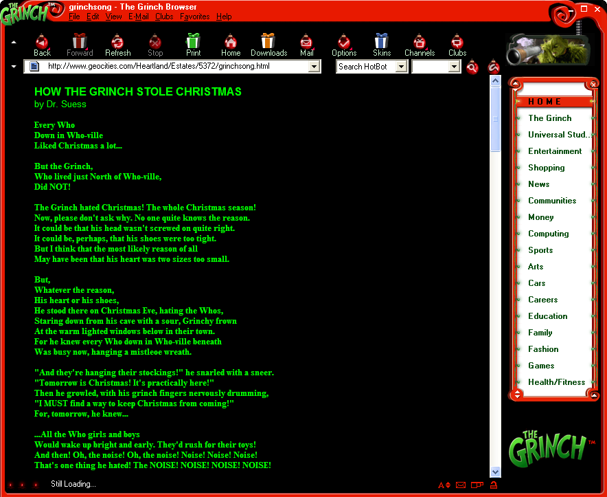

Dr. Seuss Extras
How the Grinch Stole Christmas (2000) Internet Browser

DOWNLOAD
.exe file zipped (3.93 MB)
The Lorax (2011) IM Icon
DOWNLOAD
1 .gif file (8.66 KB)

 .exe file zipped (3.93 MB)1 .gif file (8.66 KB)
.exe file zipped (3.93 MB)1 .gif file (8.66 KB)